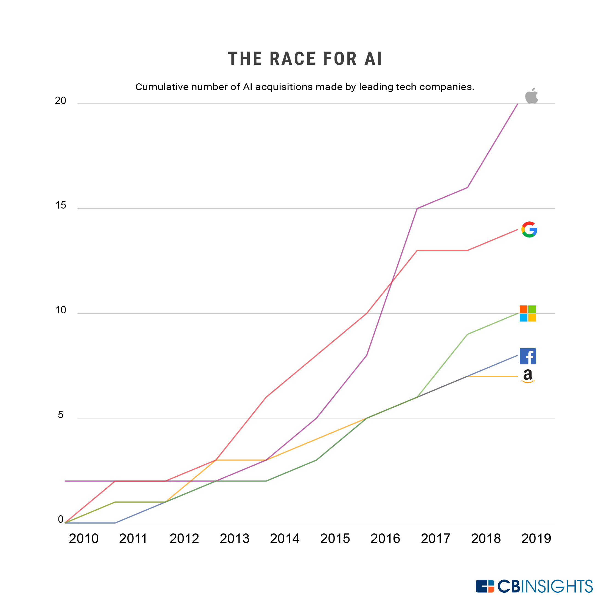

In 2023, researchers introduced new benchmarks—MMMU, GPQA, and SWE-bench—to test the limits of advanced AI systems. Just a year later, performance sharply increased: scores rose by 18.8, 48.9, and 67.3 percentage points on MMMU, GPQA, and SWE-bench, respectively. Beyond benchmarks, AI systems made major strides in generating high-quality video, and in some settings, language model agents even outperformed humans in programming tasks with limited time budgets.
In 2024, U.S. private AI investment grew to $109.1 billion—nearly 12 times China’s $9.3 billion and 24 times the U.K.’s $4.5 billion. Generative AI saw particularly strong momentum, attracting $33.9 billion globally in private investment—an 18.7% increase from 2023. AI business usage is also accelerating: 78% of organizations reported using AI in 2024, up from 55% the year before. Meanwhile, a growing body of research confirms that AI boosts productivity and, in most cases, helps narrow skill gaps across the workforce.
Looking ahead, the AI landscape is poised for continued rapid evolution. As models grow more powerful and accessible, we can expect to see even greater integration of AI into our daily lives and work. However, this also underscores the importance of responsible development and deployment to ensure that AI benefits society as a whole while mitigating potential risks.
Driven by increasingly capable small models, the inference cost for a system performing at the level of GPT-3.5 dropped over 280-fold between November 2022 and October 2024. At the hardware level, costs have declined by 30% annually, while energy efficiency has improved by 40% each year. Open-weight models are also closing the gap with closed models, reducing the performance difference from 8% to just 1.7% on some benchmarks in a single year. Together, these trends are rapidly lowering the barriers to advanced AI.
